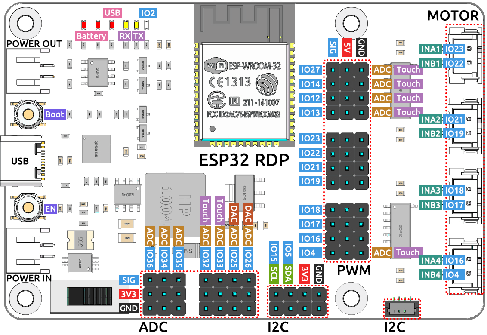

Introduction to ESP32 RDP¶
ESP32 RDP’s pins¶
ESP32 Robot Development Platform (RDP) is a general-purpose WIFI+BT+BLE MCU module using Espressif’s ESP32-WROOM-32D module.
It has industry leading integration of WIFI+Bluetooth solution, rich peripheral interfaces to support Arduino compiler and other compilers for development.
It also has an IO expansion interface circuit, LED power indicator circuit, LED control circuit, dual power supply circuit, voltage measurement circuit and 4-channel DC motor driver circuit on board.
When you are developing and debugging with ESP32 RDP, you can connect peripherals according to your needs, and the rich external interfaces can make your project interesting.
Features¶
Microcontroller: ESP32-WROOM-32D (4M) module
Bluetooth protocol: Bluetooth v4.2 BR/EDR and BLE standards
WIFI protocol: 802.11 b/g/n (802.11n, speeds up to 150 Mbps), 2.4 GHz ~ 2.5 GHz frequency range
TYPE-C: Can be used as a power supply for the board or as a communication interface to connect a PC and the ESP32-WROOM-32 module.
EN button: reset button
Boot button: Press and hold the Boot button while press the EN button to enter the “firmware download” mode and download the firmware through the serial port.
Input voltage: 7.0-30.0V (PH2.0-2P), 5.0V (TYPE-C)
Output voltage: 7.0-30.0V (PH2.0-2P), 5.0V, 3.3V
Output current: 5V/5A, 3.3V/1A, sleep state 20mA
One channel SH1.0-4P port: I2C port.
Four channel XH2.54-4P port: DC motor port
12 x PWM channel, 4 x ADC channel, 4 x GPIO pins.
You can find more details about the ESP32 module HERE.